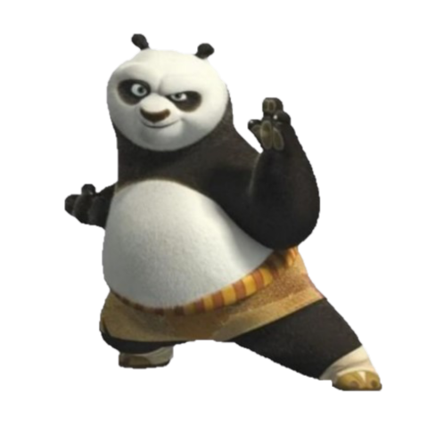

Dragon Warior
🎶"Hear the legends of the KUNG FU PANDAAA"🎶
OHhh! Sorry, didn't see you there...
Well nevermind that, shall we move on?
So! You wanna learn what's it like to be The Dragon Warrior huh?
Well you've come to the right place! And.. well the only place giving how
there is only one Dragon warrior... in the whole world...
Okay! Focus Po. So let me start how I became the dragon warrior.
Some actually may say that it was an accident, but, like my master
used to say, there are NO accidents!
So here I was in my dad's nudle shop. Yes, the all powerful Dragon
Warrior used to work in a nuddle shop. Stop laughing.
Anyways, from nowhere I saw this guy posting a poster. The poster said
"Who will be the Dragon Warior?", I freaked out! "This was once in a lifetime"
I said. So, I quickly kicked out everyone from the restaurant and
rushed to the main door. "Hey! Where are you going?" Yelled my dad,
I quickly said "I'm going to the Jade Palace", on my surprise he actually
agreed, well, not quite... He let me go, but not to witness the once
in a lifetime event, but, to sell noodles😒.
Well I was not going to break my fathers heart, well not until I reached
the stairs, yeah, my worst nightmare! I couldn't carry the noodle cart
so I left it.
Moving on! So while I was fast on those stairs I still missed my chance,
the door closed on me! After a few failed attemts to get it or watch outside,
I invented the rocker cart! Yes! I lit that cart on fire and I flew
onto the ceremony like a boss. Well it was a bit more embarrassing but
it worked... So what happened next? Well that's in, I woke up from my
few second coma(from the fall), and I saw a crazy old turtle pointing
his finger at me?!? Wait! No, that was Master Oogway choosing the next
Dragon Warior, Yes! He picked me! Then the ceremony started and the
confetty and it was crazy! But truly, one of the best days of my life!
So yes, I went to see The Dragon Warior, and became, The Dragon Warior!
So now, let me answer the most important question!
Yes! It is awesome being the Dragon Warior! It is exhausting
but, AWESOME!
PS. Don't tell Master Shifu but I might have broken the
training hall again...